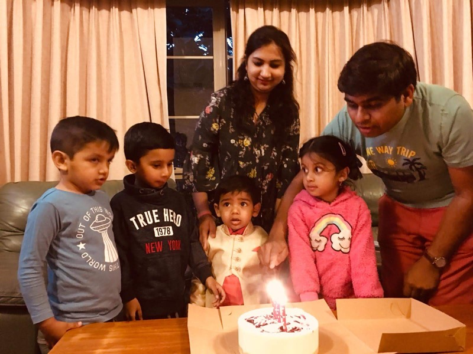
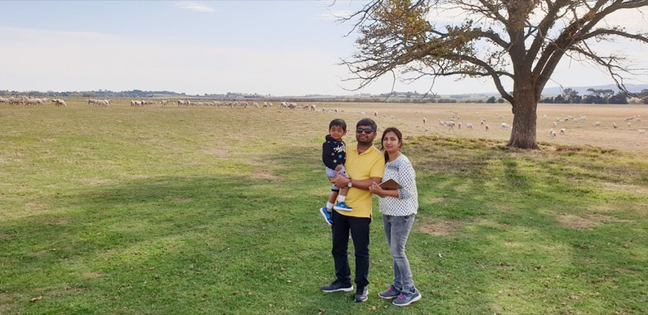
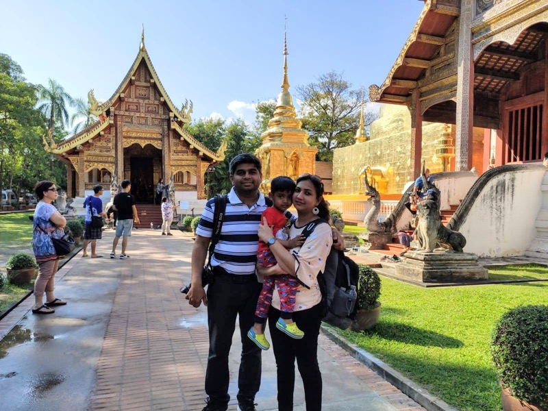
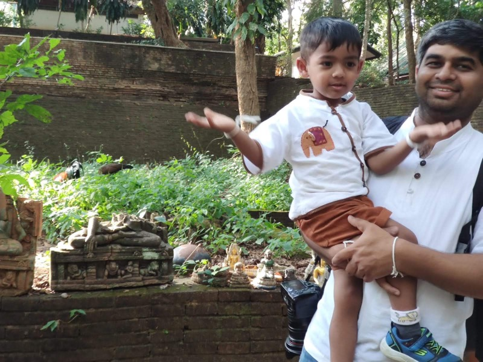
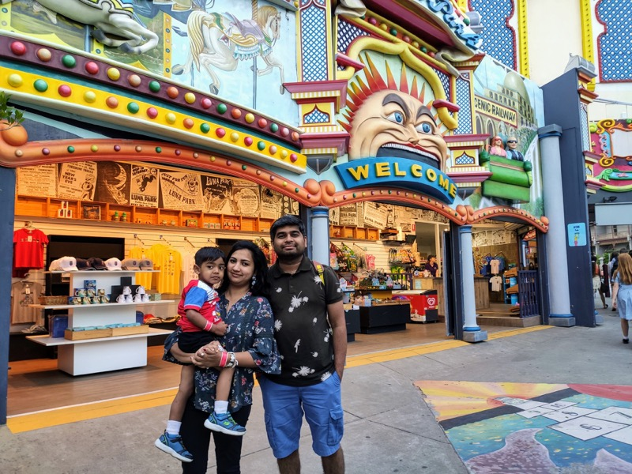

Reflection on 2019
Welcome to the new year 2020. I want to take a pause to reflect on the last year on personal and professional front. The year was nearly flat and steady. There were no surprises, spikes like last year especially on the personal side. Personally, I have enjoyed the whole year with the family and friends in Melbourne. 2019 was also a year of change. I changed many projects this year unlike one in past one decade. I got enough time to learn new things and travel this year :-).
Spiritual Journey to Brij
While returning back to Melbourne, we spent few days in the Brij - the land of Krishna and Radha. I always wanted to see this place and when I went there, I realized I should have visited much earlier. Vibes of this region is life changing. Sharing some photos of the trip.
Avyan’s Toddler Phase
My son Avyan has turned 2 in March. It was a great moment when he joins the toddler rank. As a parent, we are slightly more relaxed now as we don’t need to worry much about his regular feeds and frequent nightly wake up calls.

Tasmania Once Again
Second trip to Tassy, this time in Autumn with friends. 
Ghar Wali Diwali
Avyan’s first Diwali celebration at home.
Pachmarhi Visit
Thailand Trip
Me and my wife were planning for the Thailand trip for a long time. This was the year when finally it was materialized. We visited Bangkok, Ayuthaya and Chiang Mai (Northern Thailand) region and focus was mainly visiting the cultural and religious places rather than going to southern beaches.
 
Things I liked
- I really liked the khao-soi noodles in the northern Thailand.
- The culture and obviously all the Wats.
- Food is great, try new stuff everytime and you will be amazed with the variety.
Things I didn’t liked
- The people are not helpful especially when you speak english and ask for directions. They will say ‘yes’ to whatever you say which can be confusing.
- The public transport is very diverse and you need to take separate ticket for metro, BTS and buses. This makes it very expensive and time consuming.
- You need to bargain everywhere.
Some Tips or Learnings
- Avoid floating markets in Bangkok as they are chaotic, overcrowded and has became touristy.
- Always Bargain. Start with half price and also get some idea by Googling or asking few more people.
- Many tours in the city are traps. So be concious. I was fallen in a trap after an advise of a monk in Temple who asked me to go this tour. Later I found that tour has a bad reputation.
- Buy from local vendors instead of Mall.
Our Itinerary
- Bangkok - 1 day
- The Grand Palace
- Wat Arun
- Ayuthaya - 1 day
- Chiang Mai - 3.5 days
- Doi Inathon National Park
- Karen Village, Doi Suthep
- Chiang Mai City
- Night Bazaars, Markets
- Bangkok - 1 day
- The Chatuchak Weekend Market
Christmas Break
One again we spent beatiful holidays in Victoria with friends.
